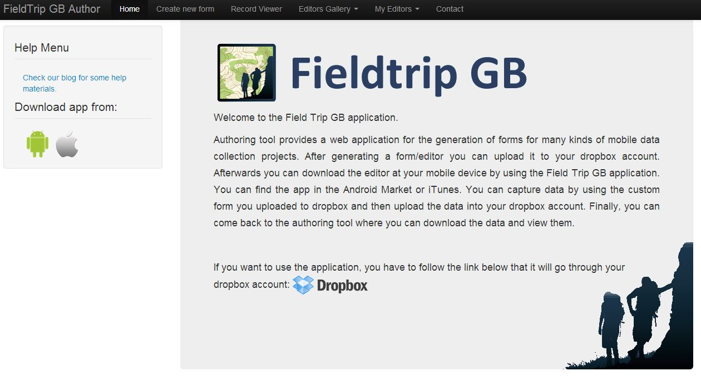
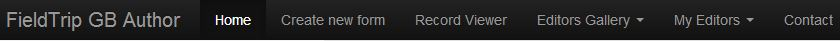
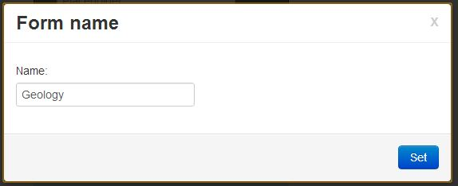
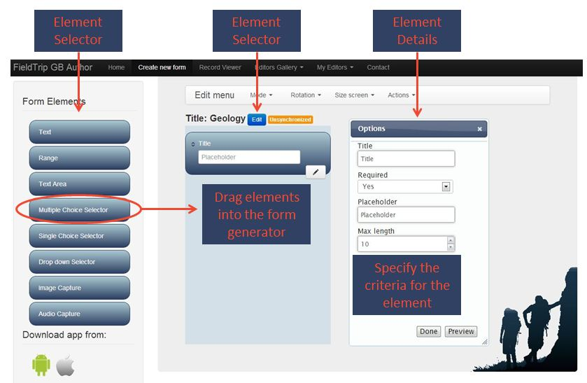
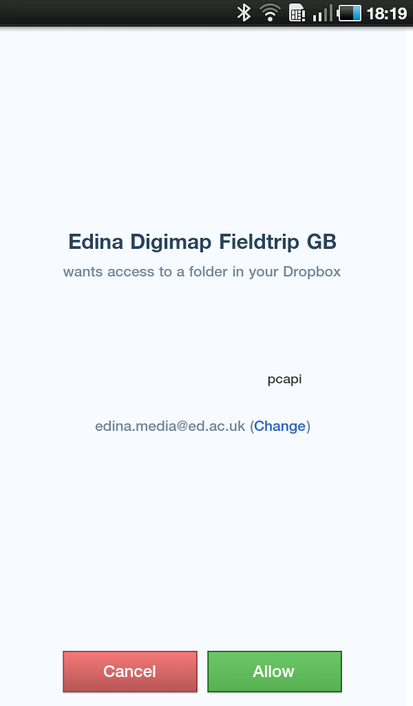
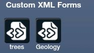
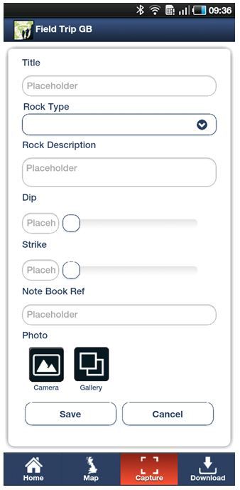

The basic capture functions allow you to record images, audio and text with basic location data attached to them. However, it is clear that many users will want to capture more complex data against strict criteria for project. In such cases, the Custom Data Forms allow the user to design data capture forms that suit their needs. These forms help ensure that all the data is captured in a consistent manner.
The Custom Data Forms are created in the FieldTrip GB Authoring tool (fig 5.1). This is not part of the app, it is a web-based form that users would access through their desk-computer or laptop.

Fig 5.1 - Authoring Tool
To be able to deploy custom data forms to your device you need to have a cloud storage account with Dropbox (more cloud storage providers such as Google Drive and XX will be added in time). Click the ENTER button to access the Authoring Tool, you will be asked to log-in to Dropbox at this point.

Fig 5.2 Authoring Toolbar
Once you have logged in you will see the Authoring Toolbar (fig 5.2). To create a new data form, click the Create new form option. The first thing to do is to give your form a name (fig 5.3)

Fig 5.3 - Form Name
You can now start adding elements to the data form. This is done by dragging an element from the list on the left, into the central area. You can then customise the element using the option list on the right side of the screen (fig 5.4)

Fig 5.4 - Form Creator
The elements available to you are:
Text - Add a small text field
Range - Add a numerical field and control the number of steps, the min and the max values. This will appear as a slider on the form.
In all cases, you can specify if the element is mandatory or not. If it is mandatory, the user will be forced to fill it in before they can save the form. You can also preview the form before you deploy it. The preview is based around a 4 inch screensize as it is important to see how it will look on the device.
When you are ready to deploy the form to your device, click the Save Button (Actions --> Save) and the form will be uploaded to your Dropbox account.
Accessing the Custom Form from your Device
To get access to your custom form from your device you first need to make sure you can connect to your cloud storage from the device (Dropbox). Next you need to log-in to the FieldTrip GB app The log-in button can be found on the Home screen in the Download and Synch section (fig 5.5).
Fig - 5.5 Log-in button
You are essentially logging into your cloud storage account and allowing FiledTrib GB to access it. You will see a validation form (Fig 5.6).

Fig 5.6 Allow Access to Cloud Storage
Once logged in, you should see a Synch Button (fig 5.7) in the Download and Synch section of the Home screen. To update the device with the custom data form you created in the Authoring tool, click the synch button. Note - you will need a 3G/WiFi connection at this point as the app will have to connect to your cloud storage across the internet. Yu dont have to do anything else, the app will grab the forms and put them in the right place on the device.
Fig 5.7 - Synch
Once you have Synched the device with your Cloud Storage you will be able to access your Custom Forms by entering the Capture Section. You will now see your custom forms listed, in this example we have 2 forms; trees and Geology (fig 5.8).

Fig 5.8 - Custom Forms Available
To access a form, simply click the one you want to log data against and it will open (fig 5.9). Note - you cannot modify forms within the app, modifications can only be made through the Authoring Tool.

Fig 5.9 - Geology Form